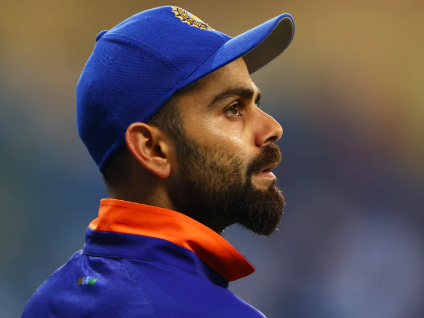
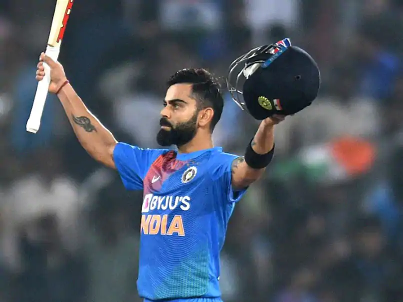

RISE OF KING KOHLI

Kohli started a series of records with being the third batsman in the world scoring 1000 ODI runs before turning 22. In 2013, Kohli became the captain of the Indian cricket team for the triangular series in West Indies after Dhoni was injured and found unfit to play. In the second match of the tournament, Kohli scored his first hundred as a captain scoring 102 off 83 balls. In the seven-match ODI series against Australia, Kohli hit the third fastest ODI century, crossing the 100 run mark in 61 balls. In the two-match Test series against West Indies, which is memorable as the last Test series of Tendulkar, Kohli equaled Viv Richard’s record of being the fastest batsman to get 5000 runs in ODI.
To become a good player, you need talent. To become a great player, you need an attitude like Kohli. - Sunil Gavaskar
click here
Virat Kohli is currently counted among the most dangerous batsmen in the world. Virat Kohli has not only shown his ability in his cricket career but has left its mark in everyone’s mind.
We Indians cannot deny the fact that after all, Virat Kohli is such a cricketer, whose game every Indian wants to see. But they are also liked all over the country.
Every cricket-loving child of our country and their parents want to make their childlike Virat Kohli. Virat Kohli took the bat in his hands at the age of three. Then no one would have imagined that this small child would bring such a name to our country.
I can’t finish writing as much about King Kohli. He is a brand in itself. Kohli has also done a lot of noble work. Because of all these reasons, I consider Kohli as my idol..
Virat Kohli has attributed his success to his coach Rajkumar Sharma and the guidance he received from former India captain Bishan Singh Bedi. Such an unbelievable feat of success has not been able to sweep Kohli off the grounds. He remains a very humble person, a true role model for youths of India. Recently, he has been rated 8th in ESPN’s top 10 most popular sportsmen in the world being preceded by sportsmen like Christiano Ronaldo, Lionel Messi, Roger Federer etc. And this is where he belongs.
I Love Watching Virat Kohli Bat. I Love His Aggrission And Serious Passion That I Used To Have. He Remainds Me Of Myself - Viv Richards

Back to previous page